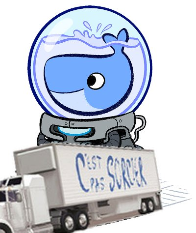
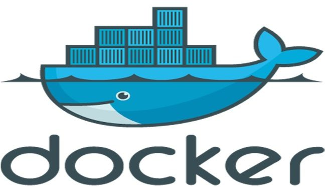
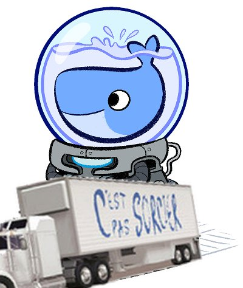
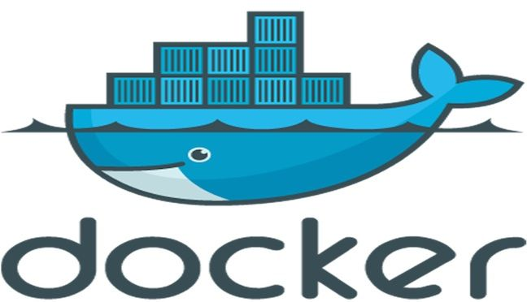

Marcel, the french Docker - Marcel, le docker français
 



Marcel is a french wrapper around the docker CLI, intended as a drop-in replacement of docker, for the future french sovereign operating system.
Examples
-
docker run→marcel chauffe -
docker images→marcel cederoms -
docker login→marcel vos-papiers -
docker logs→marcel bûches -
docker pause→marcel rtt -
docker suspend→marcel grève -
docker tag→marcel graffiti -
docker rmi→marcel rsa
Dockerfile
Obviously, the Dockerfile name is not sovereign enough for us. That's why instead of Dockerfiles, marcel uses RecetteÀMarcel files.
For now, they use the exact same syntax as Dockerfile, but we'll see about that.
For it to work, you just need to include a RecetteÀMarcel file in the current directory where you execute your marcel construis command, are you're good to go.
Thanks
The original idea came of @ndeloof's mind. The logo was provided by jkneb.